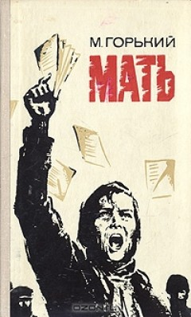

Mother
Author : Maksim Gorki
Genre : Novel, Fiction
Number of Pages : 400
Pelaka is a woman who lives in Russia with her husband. Her husband is Mikhail, who works in a factory and drinks from work like any other man and then beats his wife. This condition is very common and women are only available to serve their husbands. And babysit. Paleke and Mikhail have a son, Pavel. Pavel is a child who looks after his father's behavior and thinks like him. When his father died, he mistreated his mother at first, but when he went to the factory, he began to change. Her mother noticed the changes in her child. Pavel was reading different books every day and becoming a quiet boy. When his mother asked him what he was reading, he called them banned books and stressed that he wanted to be alone.
At the factory, the bosses treated the workers very badly. They always worked harder, but they never got paid. The wages they received were very low working conditions. Pavel was aware of all this, and he had a few other friends who thought like him. One day, her mother wondered and asked her what she thought. Pavel told him everything. He talked about the conditions of the workers, freedom and justice. He said his friends were coming home in a few days and they'd be gathered here. Ana didn't warm to what came in at first, but then as she listened to them, her blood warmed to them all, and she even began to love Andre like a son.
Pavel and his friends began issuing notices to workers at the factory. Gradually, everyone was realizing the point. The workers were talking among themselves and talking about conditions and injustices. But the gendarmes heard about it, and the house raids began. An evening of gatherings at Pavel's homes was raided and several people were arrested. On May 1st, it was the beginning of everything. On that day, Pavel was carrying the flag at the front and wanted the people with him. But when they saw the police and gendarmes, the workers began to flee. Pavel and four of his friends resisted on their own. They're all in jail. Since then, he's taken over everything Ana Pavel has done and wanted to do. He handed out leaflets to workers, secret newspapers and banned books. He went to different places every day, met other people, and impressed everyone. Everyone knew Pavel's mother now.
Seven months later, everyone knew everything. Even the villagers understood what should have been from newspapers and books and how much they were robbed. Ana was always carrying books for them. His son's court day came and Pavel made a very good plea, but he ended up exiled to Siberia as expected. No one was right about the judge's decision, but there was nothing we could do. Ana immediately asked a friend named Nikolai to make the text of her son's speech a statement that day. He was going to spread it to all the villages. He was going to take the train to Moscow. When he got on the train, he knew he was being followed. He thought about running away, but all of a sudden, the guys started coming towards him. Ana suddenly unpacked and scattered all the leaflets around, holding them in people's hands.
On the other hand, he was telling them how bad the situation was, that everyone should revolt now, that workers and peasants have rights. All of a sudden, a lot of people surrounded him and started listening to him, but the gendarmes immediately caught up with her and started beating her. They were punching and kicking at every word that came out of his mouth. He was eventually dragged to the main locations. He took his last breath with the last kick of a gendarme. His last words were, "You losers."